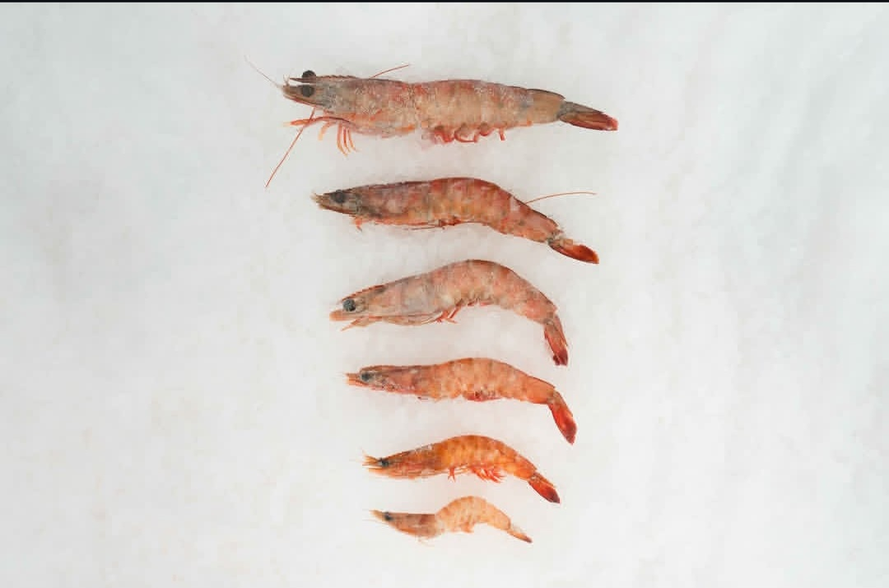
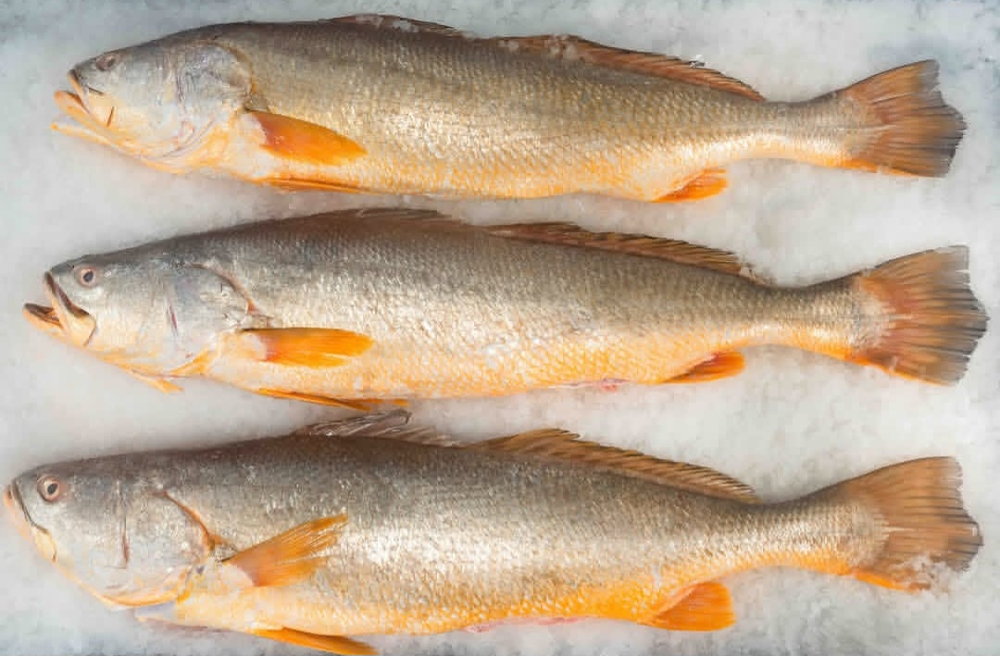
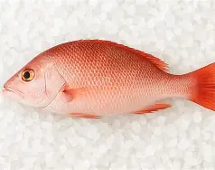
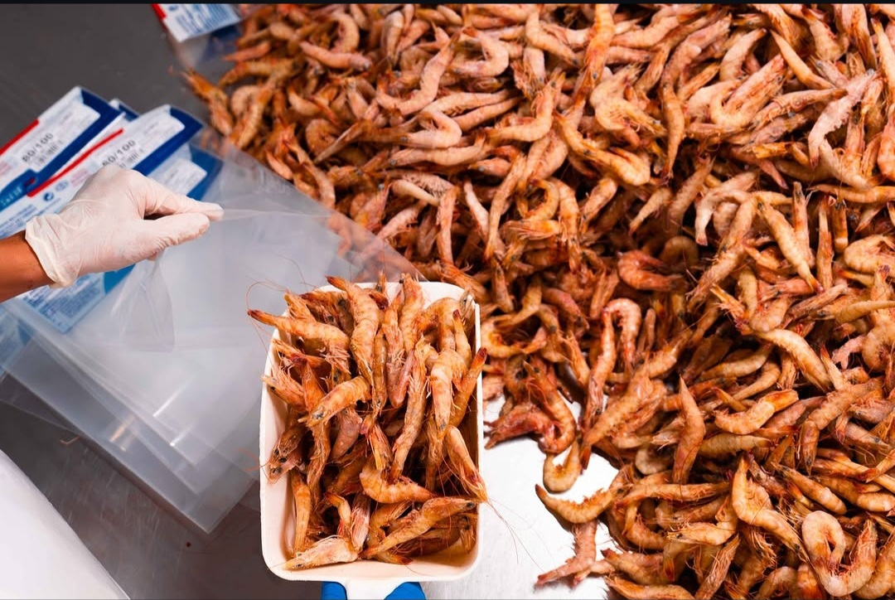
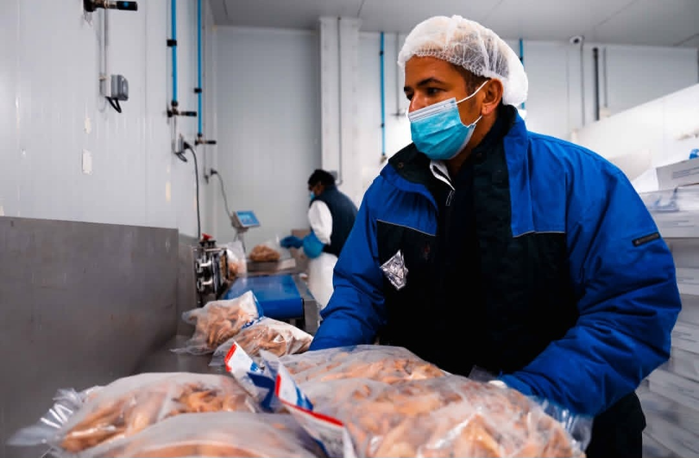
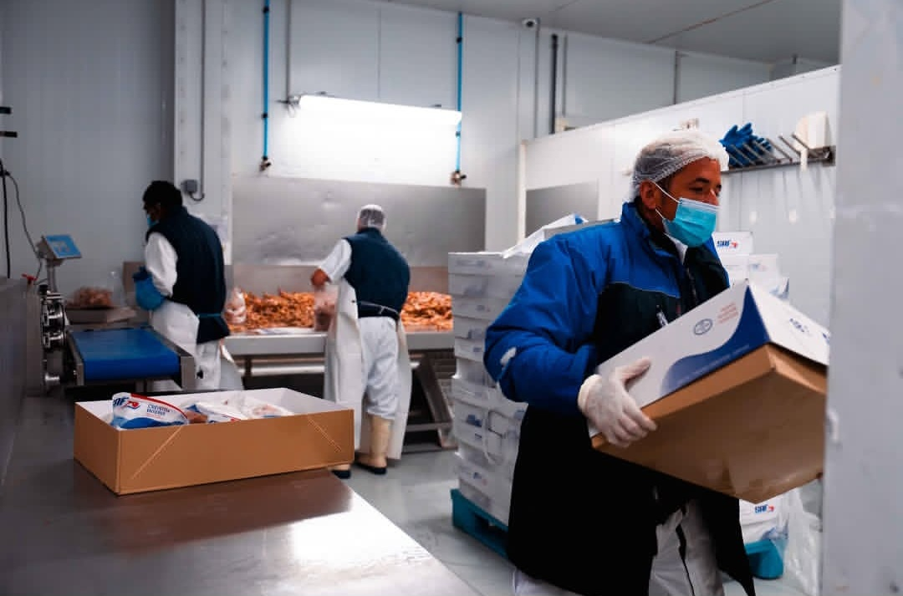
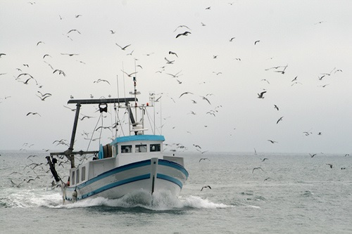
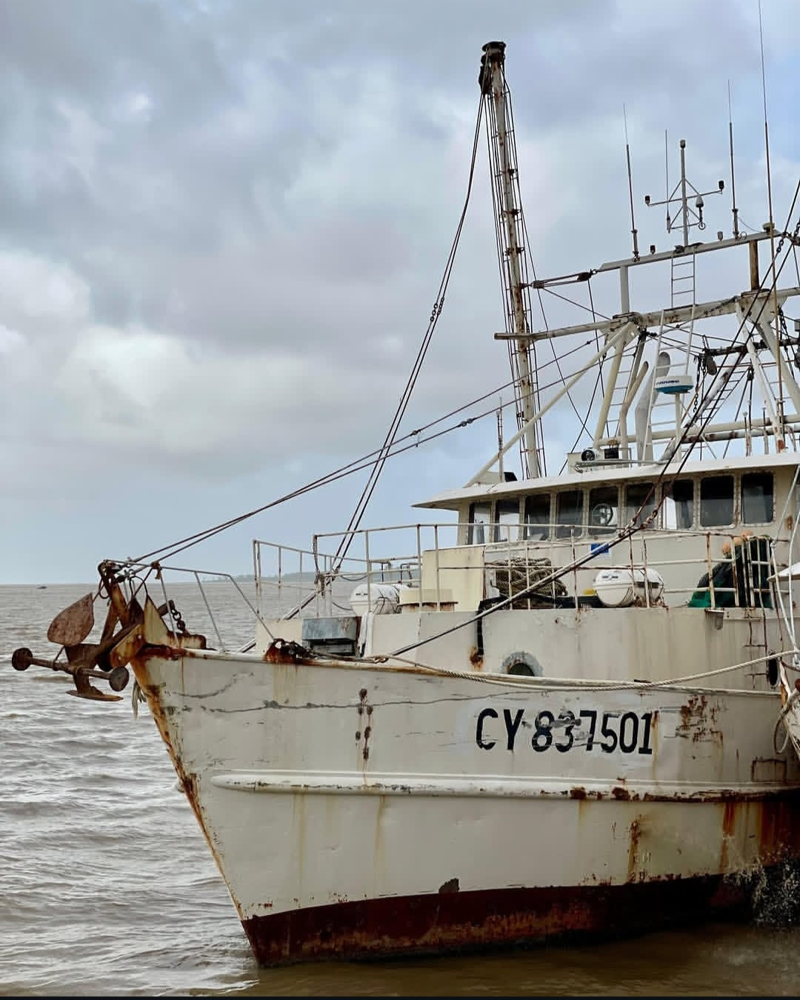
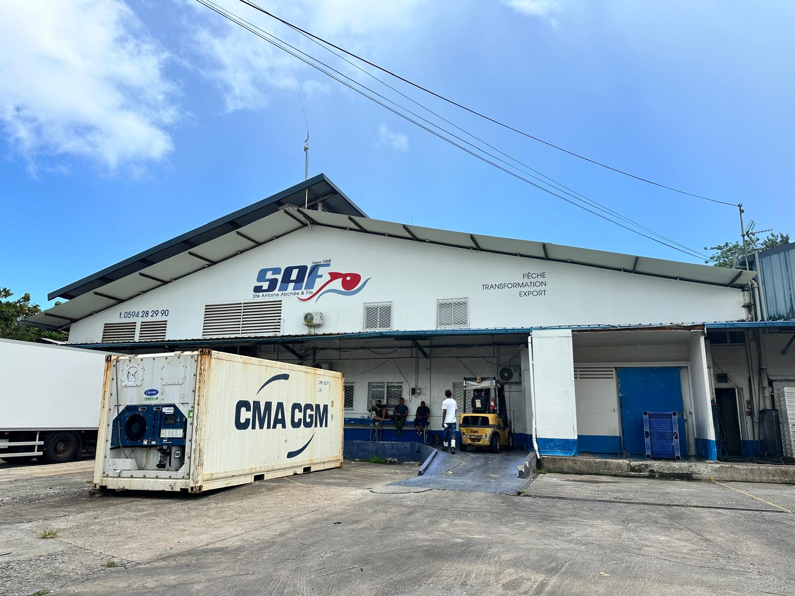

Fondée en Guyane française en 1968 par Antoine ABCHEE, la SAF et ses filiales (SPGS, A-FISH) incarnent 3 générations d'excellence maritime. Leader du secteur, nous valorisons les ressources halieutiques du plateau des Guyanes vers l'Europe et l'international.
Depuis 1968, la SAF pilote les opérations d'armement, la gestion de la flotte principale, la transformation moderne dans son usine agréée CE et l'exportation internationale.
Filiale spécialisée dans la capture en haute mer, la SPGS opère la flotte de chalutiers et de canots pour une pêche sauvage responsable sur le plateau des Guyanes.
La marque de distribution grand public et B2B garantissant la fraîcheur et la qualité optimale des produits de la mer sauvages surgelés directement après la capture.

Crevettes d'exception pechées sur les fonds marins de Guyane, reconnues pour leur chair ferme et leur goût naturellement iodé.

Poisson noble emblématique des eaux guyanaises, très recherché pour la finesse de sa chair blanche et sa tenue parfaite en cuisson.

Pêché en partenariat avec des lignes artisanales. Chair délicate et colorée, idéale pour la restauration et les étals haut de gamme.

Opération de calibrage de précision par des équipes qualifiées dans le respect strict des normes HACCP et sanitaires CEE.

Conditionnement sous cartons renforcés palettisés conçus pour résister au transport conteneurisé frigorifique longue distance.

Gestion directe des expéditions par conteneurs reefers depuis le port de Cayenne vers les plates-formes logistiques globales.
Depuis de nombreuses années, la Société Antoine Abchée & Fils s'engage activement pour la préserve de l'environnement marin et de la biodiversité sur le plateau des Guyanes.
Chaluts équipés de TED (Turtle Excluder Device) évitant la capture des tortues et gros animaux marins.
Portes de chalut profilées et générateurs d'hydrogène embarqués pour diminuer la consommation de carburant.
Modernisation constante de la flotte et amélioration continue des conditions de vie à bord.
Conformité intégrale aux exigences sanitaires et réglementations de l'Union Européenne.



Pour toute demande de cotation, d'information sur nos disponibilités de marée ou d'établissement de partenariat d'import/export.